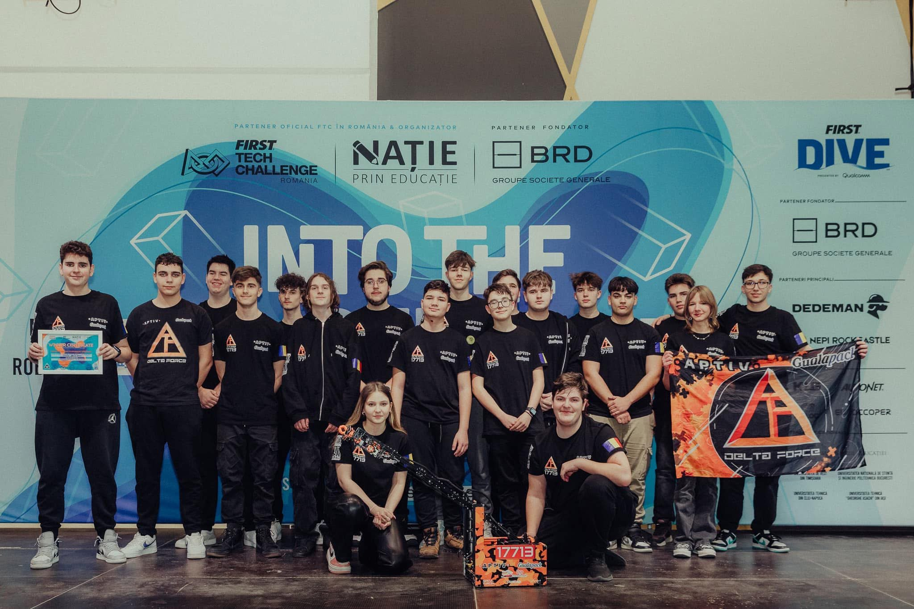
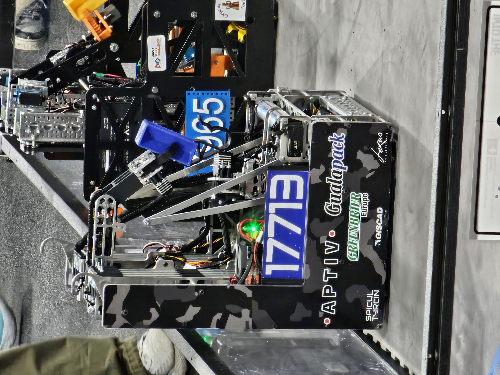

2024 - 2025
Into The Deep
Pagina pregatita pentru un sezon cu identitate clara, imagini subacvatice, specimen paths si un recap care poate arata mult mai cinematic decat un simplu card.
FTC ArchiveUndersea gamePlaceholder page
2024 - 2025
Pagina pregatita pentru un sezon cu identitate clara, imagini subacvatice, specimen paths si un recap care poate arata mult mai cinematic decat un simplu card.

Overview
Aici poti povesti cum a aratat sezonul, ce a mers bine, ce a fost dificil si ce ai vrea sa ramana in arhiva ca imagine a echipei.
Highlights
Galerie
Fiecare placeholder poate deveni cadru de competitie, detaliu de robot sau poza de echipa din Into The Deep.

